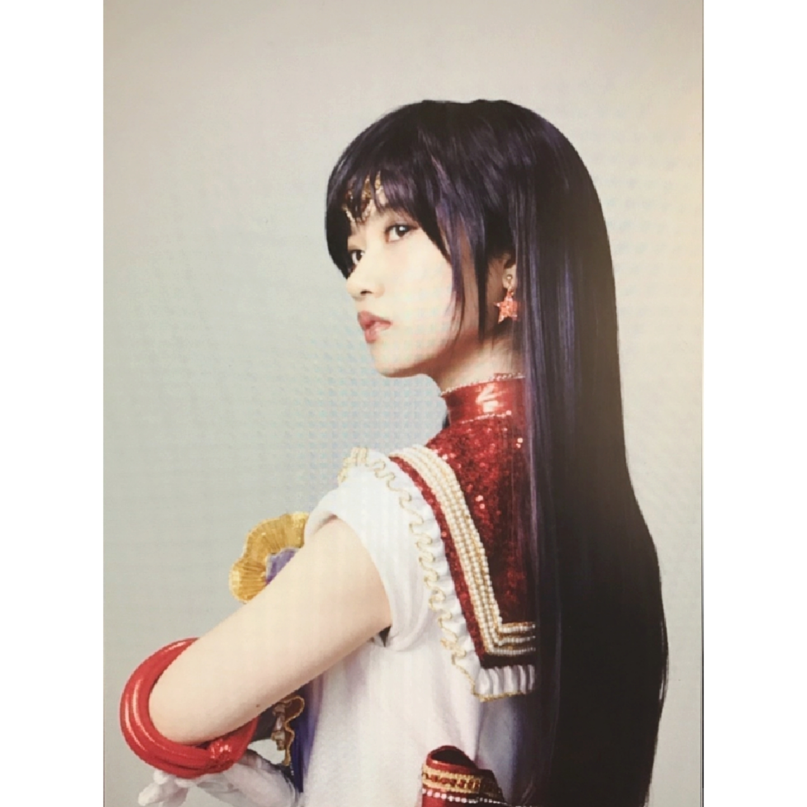
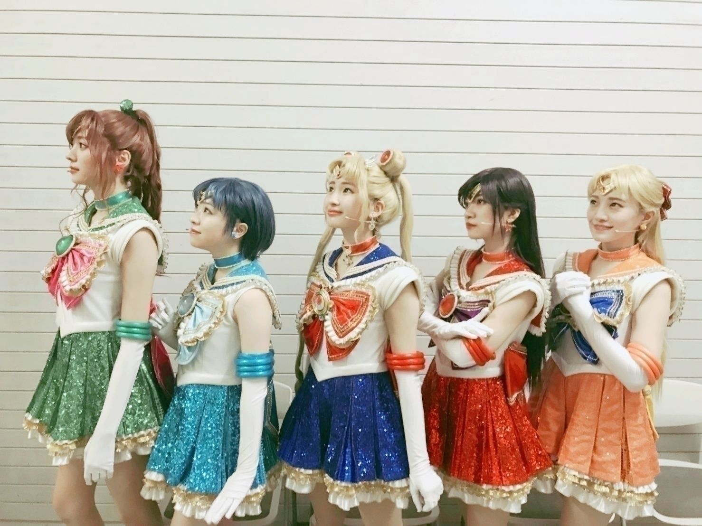
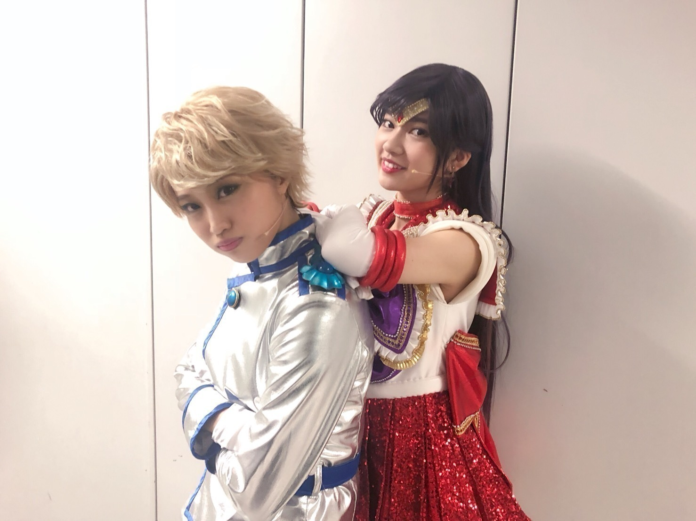
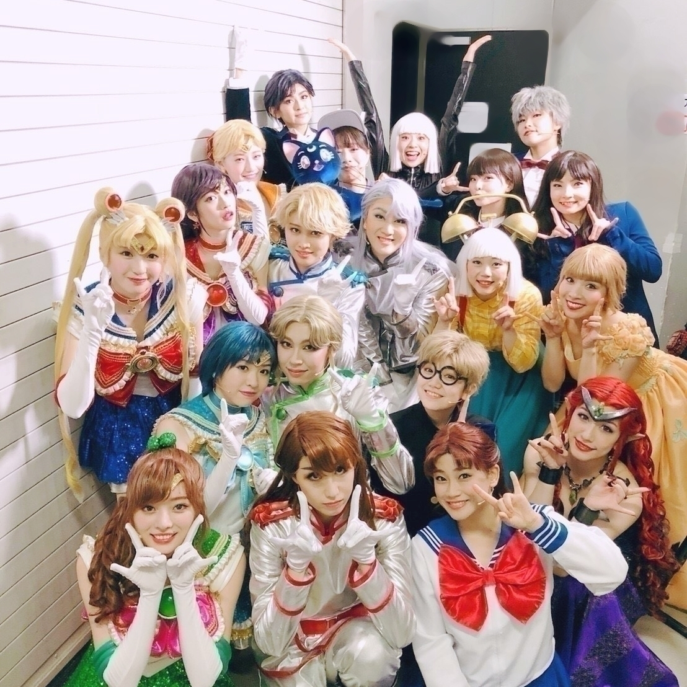
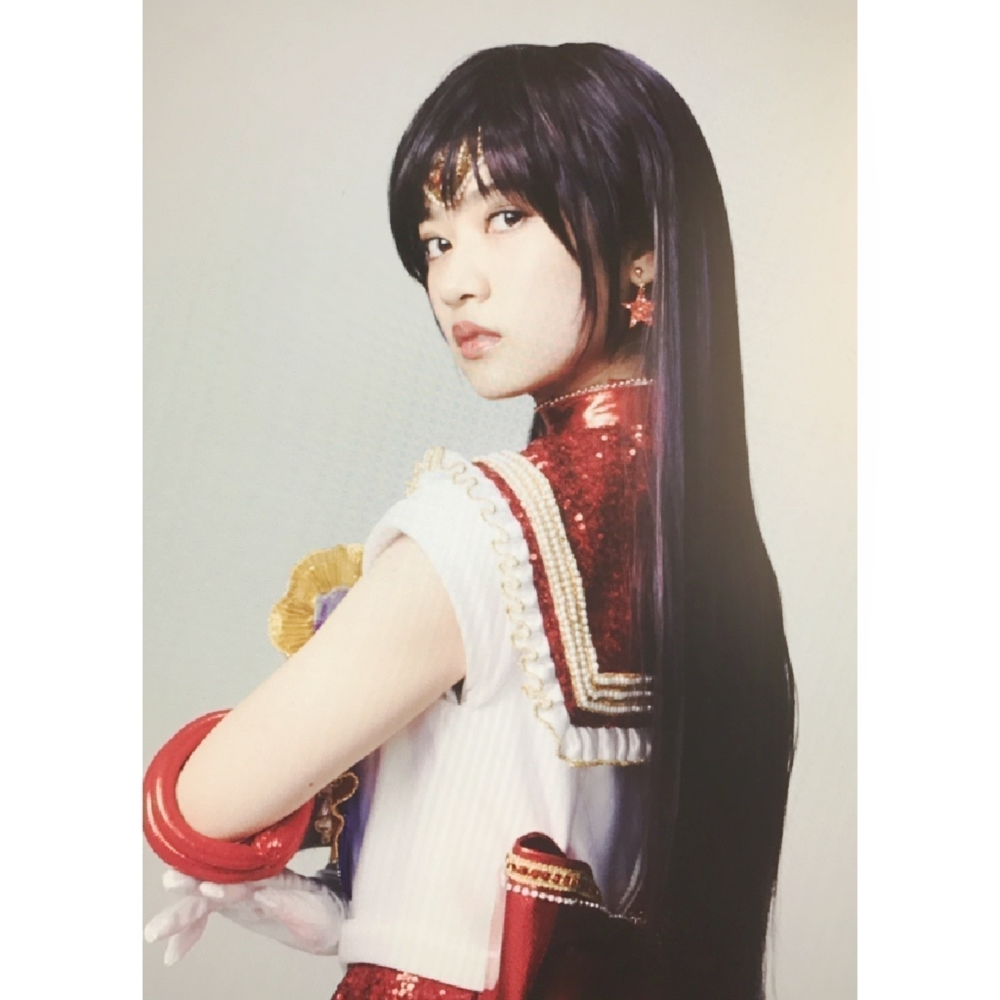

2018/1011Thu私に、なれ！

題名はまたわかる人にはわかって頂けるかな、、、(..)
乃木坂46版 セーラームーンについて
いつも、ステージから見えるお客様皆さんの顔が
凄く優しい眼差しで
泣きながらも笑顔が溢れていて
本当に素晴らしい作品を
キャストやスタッフの皆様と
愛を沢山注いだから
出来た本当に本当に本当に
どんな言葉で表してよいのか分からないくらい
心から優しくなれる空間でした。
海外の方も沢山お越しくださっていて
これはセーラームーンの作品のお陰で出会えて方たちです。
言葉なんか何もいらないだって
教えてくれました。
セーラームーンファンの皆様
6月公演の時
全列の方に恐らく乃木坂46の寺田蘭世でなくレイちゃんのファンの方を見つけました
レイちゃんファンの方なんだなーと嬉しく思い
最後にそのお客様に目を向けたら
レイちゃん、、、って
私の事、呼んでくださって泣きながらも喜んでくださってる表情がステージから見えて
レイちゃんとして
果たせたのかなって凄く嬉しくて
隣にいたカナさんヴィーナスに
思わず報告してしまったくらい
嬉しい出来事でした。
また、その逆に
乃木坂46のファンでセーラームーン今までそんなに詳しくなかったと言うか方も
その作品の良さに魅了されまくって
漫画買ってみたとか
アニメを見始めたとか
何なら色々通り越してグッズを身に付けて笑顔でセーラームーン愛を語ってくれて
握手会で報告頂くことも多くて
凄く乃木坂46版セーラームーンが出来て良かったなと心から思います。
皆様含めて
このセーラームーンという作品に
私が関わらなかったら
出会えなかった大切な人達です。
ありがとうございました(..)
そして、ここからは6月恥ずかしいからとメッセージを書けなかった
teamSTARの皆へ
小百合ムーン
小百合ムーンとか
名前からして尊い、、、(..)
何回も井上さんには心動かされました。
井上さんは素のときからドジっ子で
teamSTARのお笑い担当
時間にも少々ルーズでいつも
カナさんに急かされてるイメージ
でも、やるときはやる
本当にうさぎちゃんみたいだからこそ
先輩だけど支えなきゃって
思えて
この関係性が
プリンセスを自分の持ってる力で精一杯支えたい守りたいって
気持ちと重なりました。
楽屋でもおふざけが凄すぎる井上さん
お腹が痛くなるほど
いや、お腹通り越して背中も痛くて
息が苦しくて喉やられるくらい
沢山笑わせてくれた井上さんのお陰で楽しく終えられました
感謝(..)
みりあマーキュリー
みりあは何でも繊細
演技も細かくて
マーキュリー、亜美ちゃんの
あのタンポポみたいなふんわり優しい雰囲気が
みりあのダンスや声に、ピッタリ
マーキュリーのダンスは
女の子らしいしなやか系が多くて
踊るの好きなみりあが楽しそうに
踊ってるのをみて
幸せな気分になったよー
亜美ちゃんはレイちゃんと
ペアのイメージもあるけど
正反対な性格、カラーの二人だけど
何故か息はピッタリあうのが
乃木坂46 2期生として長く付き合ってきた個性の正反対の私達だからこそ出来た関係性で、亜美ちゃんとしてレイちゃんとして向き合えました。
本当にありがとう
井上さんと
みりあはセーラームーンを
小さい頃触れてこなかったと
公演前言っていたけど
今では二人からもセーラームーン愛が伝わってて尊い
梅ピヨジュピター
なんか、アニメとかで見てた
まこちゃんのスタイルそのまま
teamSTARの身長差凄く萌えますよ、、、
でも、見掛けによらず
モジモジ引っ込み思案
緊張しいだしね(^^;
そして、誰よりも乙女、、、
コスメの話してるときの目はキラキラしてるし
6月なんて
ネフライト役のShinさんと喋れないーってその引っ込み思案さと
乙女らしさ全開だった梅ピヨ、、、
でも、本番中は誰よりも熱くて力強い眼差しを向けてくれて
心からジュピターを楽しんでいるのが伝わりました
何回もその眼差しに応えたいって思えました。
同い年でお互いバンダイさん版セラミュ育ちの私達
楽屋ではネルケさん版セラミュの楽曲も歌ったり
二人ともセーラームーンが元から好きな者同士
ラ・ソウルジャーを歌わせて頂けると聞いたときは意味分からないくらい胸が熱くなりました。
千秋楽も
噛み締めたよねって公演後話したり
よく、プライベートでも
意見が噛み合う私達
teamSTARに居ると3期生では
お姉さんだからと気を張っている梅ピヨの甘えん坊キャラになれるのが良き
これからも自分らしさを大切にしてね(..)
カナさんヴィーナス
包み込む優しさのあるカナさんヴィーナス
アクションの多い
ヴィーナスですが
何でもバランス良く出来るカナさん
アクションもとても素敵(..)
そして、皆さんご存知ダンスお上手なカナさん
それなのに、人一倍心配性なカナさんは
更に何事も真剣に手を抜くことなく
頑張るカナさん
そんなカナさんが
笑ってくれると自分の事以上に嬉しいし
泣いてたら私も悲しい
千秋楽もお稽古期間も
カナさんが泣いた瞬間泣いちゃうし
爆笑してたら
私の心が満たされてました本当に
カナさんも私も舞台にそれぞれ苦手意識があり前向きでなかったのですが
そんなカナさんがヴィーナスだったから私は頑張れてました。
本当に、カナさんがteamSTARのヴィーナスだからここまでこれました
こんなに子供っぽい私達
いや、井上さん同い年とかですよね、、、(^^;
どんな時も4人を包み込んでくれた
だからこそ、このリーダーに付いていきたいと思えました
普段キャピキャピから程遠いカナさんが美奈子ちゃんらしくを意識して
細かいところまで
努力してたのと私は見てましたよー
そんなところが大好き
セーラームーンが始まり
私が気付けたことは
自分の大切な人達が
楽しそうにしているのを見るのが
幸せなんだと気付けたことです！
凄く大きな収穫でした！
teamSTARの口癖のひとつ
尊い
いや、自分達で尊いってなんだよって感じですが(^^;
teamSTARは
内面、自分の中の元から持っている特徴や個性がキャラクターとシンクロしていく
これがteamSTARの良さだったと思います
だから、演技に嘘がなかった
戦士でなくても
乃木坂46の私達でもこの関係性
だからこそより運命を感じました。
乃木坂46に入る前
それぞれの場所にいて
乃木坂46に出会い
そこから色んな経験をして
それぞれの個性、カラーを、スタイルを持っていたからこそ
セーラー戦士として出会えました。

これからもずっと大切な人
運命の5人です。
そして、そんな引っ込み思案で
お稽古初日から
顔面に全力で私達自信ありませんと
書いていたもじもじteamSTARの
私達を支えてくれて
優しく包み込んでくれた
キャストの皆さん
スタッフの皆さんが大好きです
キャストの皆さん
いつも、せっかく構ってくれるのに
ツンツンしてごめんなさい
好き過ぎて照れ隠しです。
ベタベタするの恥ずかしいんです
最後まで愛情表現下手っぴでごめんなさい。

そして最後まで構ってくれて
こんな私を見捨てず真っ直ぐ包んでくれて
ありがとうございました！
皆さんのお陰で
人間として成長できたと胸はって言えます！
皆さんと出会ってから
何だか明るくなった気がします！
本当にこんなに魅力的な人間
この世にこんなに存在するのかって
毎日のお稽古も皆さんのお陰で
頑張れたと思いますし
本番も無事楽しく終えられました！
大好きな人達です！
宝物が増えました
人生の自慢が増えました！
皆さんが私の誇りです！

何人かまた会おうって約束してますが
私はそれを楽しみに待ってますよ(..)
でも、皆さんとお会いできたとしても
戦士として
敵として
恋人として
セーラームーンの登場人物としては
もう、会えないのかと思うと
凄く寂しい気もしますが
皆さんの事
本当に人間として大好き
愛が深くてごめんなさい、、、
また、みかこさん
タキシード仮面様に
炎と嫉妬の戦士セーラー蘭世って言われてしまう
セーラー蘭世って
もう、セーラーマーズにはなれないかもですが
今日からもセーラー蘭世として
何かと戦い
何かを愛し
素直に真っ直ぐに生きていきたいです(..)
20年生きてきたなかで
まだ短いかもしれませんが
トップ5に残るくらい素敵な思い出、経験でした！
レイちゃんを最初で最後のいい思い出にしたいと思うぐらい
レイちゃんが大好きでした！
本当に何回もいいますが
この性格で生きてきて良かったって
自分も認められるようになったのは
レイちゃんのお陰です。
レイちゃんも誤解されやすい
性格なんだろうなって
原作なんかをみてて特に思いました。
誰よりも人情深い子なんだろうけど
それを素直に表現しない
でも、その内に秘めた熱くて燃えるような大きく強い想い、意識が
ちょっとした発言や行動仕草に出ていて
自分で言うのもおこがましいけど
重なる感情沢山ありました。
だから、今までの人生の経験を
レイちゃんに重ねてぶつけました。
特に変身するシーン
crystalの変身直前のシーン
分かるわ。今、あたしが、何をすべきか！
心で誓い
決心をするレイちゃん
私も乃木坂46に出会うまで
只の少し変わった子でしかなかったと思います。
でも、変わりたくて
こんな人と違う私だからこそ
絶対に大きな事を
他の人では出来ない何かを成し遂げたいって
思っていた丁度、レイちゃんと同じ中学2年生の頃の自分と重ねていました。
メイクアップは大切な台詞
誰もが憧れる台詞だと思います。
メイクアップは毎公演
レイちゃんとして
私として
心から変わってやるんだって
思いをぶつけてました(..)
武内先生
セーラームーンという
素晴らしい作品をありがとうございます。
小さい頃は
絵が可愛いから
変身っていいな
キラキラしてるからって理由で好きでしたが
今はその奥の深さ
愛や夢、希望
１人の女性として沢山学ぶことのある作品となりました。
小さな頃
セーラームーンと言う作品に助けられた私
大人になっても支えとなり
勇気をくれた作品となりました。
私にとってセーラームーンは
きっと運命の作品です(..)
なんか、とても長くなってしまいました
6月の時も皆さんへの愛を
つらつら書かせて頂いたのですが
うん、結果何を１番に伝えたいかと言いますと
セーラームーンに関わってくださった全ての皆さんが大好き
同じ地球に生まれて
出会えて良かったです(..)
では、長くなりましたが
レイちゃんありがとう

2018/10/11 20:00


コメント(663)
お疲れ様でしたっ！！！
ブログありがとう
セラミュ良かったよー
やぁ(｡･ω･)ﾉﾞ親愛なる蘭世
ブログ更新ありがとう。
ゆっくり読んでコメントさせてもらうな
きっとまた後で(^^)/
1枚目の写真可愛いです
これからも頑張れ蘭世！
すき家(笑)
セラミュみてセーラームーンに興味津々なった！
セラミュお疲れ様！
めっちゃ可愛くて写真を何回も見ていた笑笑
演技もすごくて流石だなぁって思ったよー！！
これからも頑張って
これからも頑張って！
セーラームーンの舞台お疲れ様でした
僕は見に行くことができなかったけど陰ながら応援してました！
これからの蘭世の活躍も期待してます！
今はもう毎日セラミュの歌、歌ってます！
マーズのお仕置きよ↓って声が低くなるところかっこよすぎました！！本当に最高の公演をありがとうございました！！！！！
蘭世もミュージカルやから、歌の練習相当したんやろなーってのが凄い伝わってきたよー！！
しかも、すげえ太くて良い声出るし、会場に響き渡る蘭世の歌声は迫力もあって本当に感動しました…
team STARの絆も凄い観ている側にも伝わってきました…本当良い仲間に出会えたんやな！素晴らしい！！
蘭世がどれだけ劇に対して真剣か、一生懸命挑んだかがよく分かった(T_T)
この5人でユニット曲とか出ないかなぁ（ ; ; ）
ブログ更新ありがとー！！
ブログまってました！！！
セラミュほんまにお疲れ様！！
蘭世の勢いとまらんぜ！！
蘭世ちゃんのことずっと推し続けます。
頑張ってください！
セラミュお疲れ様でした！
見に行きたかったよ。
ひと回りもふた周りも大きくなった蘭世を握手で感じ取れたらいいな！
10/21握手行くからね！
セラミュ観に行きました！！！
千秋楽しか行けなかったんだけどね。。。
でも、蘭世が大切に大切にしてる舞台を
観にいくことができて
この目に焼き付けることが出来て
本当に本当に嬉しかった。
おつかれさまでした。
ジェダレイが1番大好きだったなぁ(´∀｀)
DVDも予約しました(´∀｀)
楽しみに待っております(´∀｀)
個握も行くからさっ
感想だいぶ先になっちゃうけど
必ずお話しに行きますねん(´∀｀)
ほなねっばいばいっ！
セラミュ見に行きたかった！
キャストのみんなに誕生日お祝いしてもらってたり仲の良さがすごい伝わってきたよ〜
あと蘭世の演技良かったって声もきけて嬉しい！
また舞台やって欲しいよ！
セラミュにアンダラ って忙しかったやろうけど、ほんとうにお疲れさま！
12月のアンダラ 絶対行きます
セラミュほんとにお疲れ様！！
ブログも最高に内容が濃くてめっちゃ良き(^^)
この舞台の経験が蘭世にとって良いものになったんだね！！
もっと色々個握で聞きに行きますね〜
セラミュ千穐楽ライブビューイングで見てたよ
蘭世マーズめちゃくちゃかっこよかったよ！
原作全然知らなかったけどすごい良かったよ
これからも戦い続けてね笑
セーラーマーズおつかれさまでした
尊い
名古屋の握手会めっちゃ楽しかったよー
せらみゅもさいこうでした
セラミュ、テレビでみました！
セーラームーンは名前を知っているくらいで特別詳しい訳ではなかったけど、今回の舞台は内容をあまり知らなくても楽しめました^_^
というより、素人でもグッと引き込まれるような舞台でした。
ストーリーの中で個々がとっても輝いていて、誰が欠けても成立しないんだなあ...、そう思いました。
千秋楽まで本当にお疲れ様！握手会に感想伝えに行くね〜
千秋楽見たよ！寺田蘭世という人も火野レイという戦士もどちらも改めて大好きになりました！！！！
蘭世の歌声で鳥肌立ったしセーラームーンって面白いんだなぁって実感しました！今まではそんなに見た事なかったけど見てみます！
teamSTAR 尊い！！！！！！！
またこういう舞台とか思い出に残る経験ができたらファンの僕も嬉しいです！蘭世の勢いとまらんぜ！！！！
2回観劇に行けたけど、両日とも泣きました（笑）
蘭世ちゃんが演じている姿、ストーリー、セーラー戦士の友情… ほんと素敵でした。
感動を本当にありがとうございました
マーズ超ハマってる！！
ありがとう。
9月公演しっかり観たよー。
本当にらんぜ的役だったなぁ。
ぴったりだもん。
品がある感じ。
おしとやかな感じ。
好きだなぁ。
最近は沢山のお仕事で本当に忙しかったと思うけど、セラミュについて、
ブログ更新してくれてありがとう。
待ってたよ(^-^)
セラミュ
6月の銀河劇場から9月の赤坂ACTシアターまで、完走本当におめでとう！
そして本当にお疲れ様でした。
9月公演も会場と、千秋楽は映画館で、観に行ったよ！
セラミュ Team STAR のカンパニーの皆さんの仲の良さや温かさが、舞台からも伝わりました。
舞台の期間中、素敵なキャストの皆さんと仲良く楽しそうにしている蘭世の姿を見て、
ファンとしてもすごく嬉しくて、幸せでしたよ！
千秋楽を観劇しているときは、舞台にかける想いが映画館で観ていても伝わって、感動して、映画館で号泣してしまいました(^_^;)笑
セラミュの感想は本当に語りきれませんが…
蘭世のことを、このTeam STARのカンパニーの皆さんのことを、そしてこの舞台を、応援できて本当に良かったと思っています。
セラミュの世界観を、素敵な舞台を、沢山の感動を、届けてくれてありがとう。
蘭世マーズ、本当にカッコよかったよ！
ブログもモバメも、蘭世のペースで
書きたいことが纏まったら、また書いてね(^-^)
乃木坂がカバーしてくれて素敵すぎました！
ありがとうございます！
コメントする